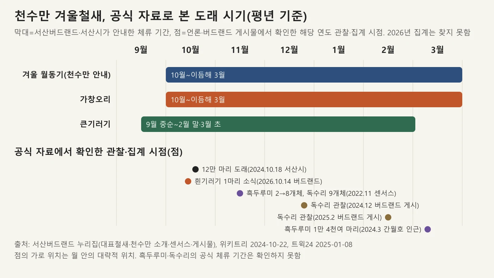
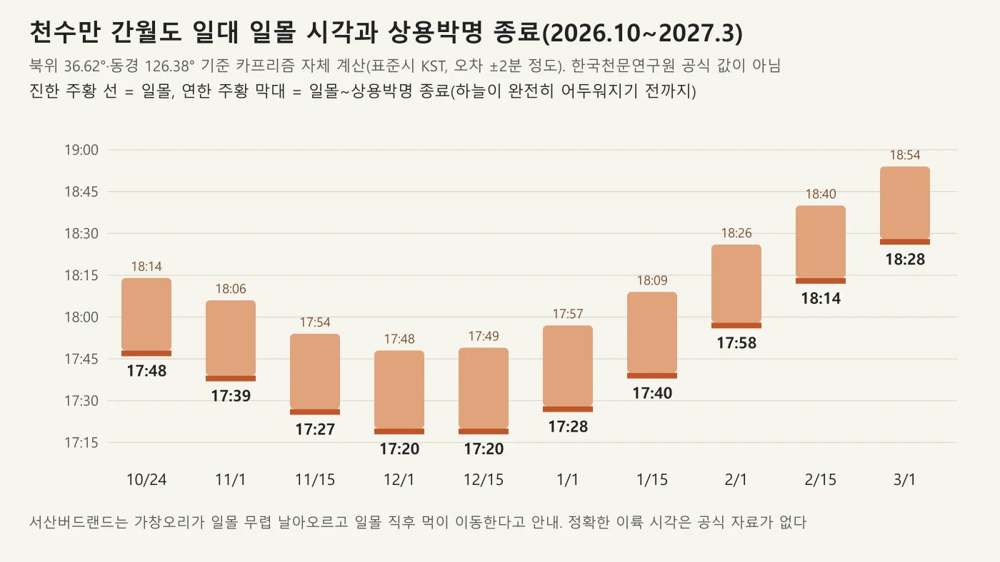
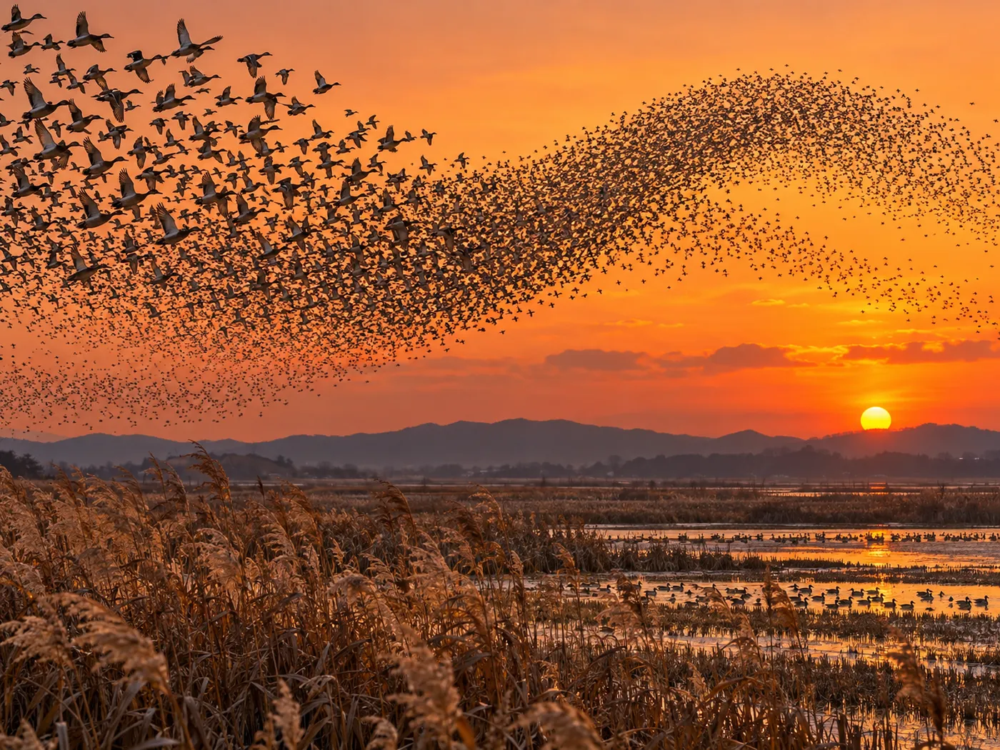
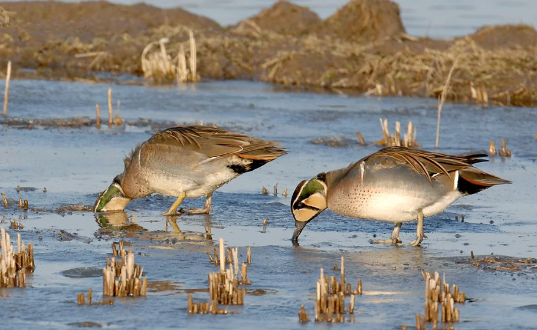
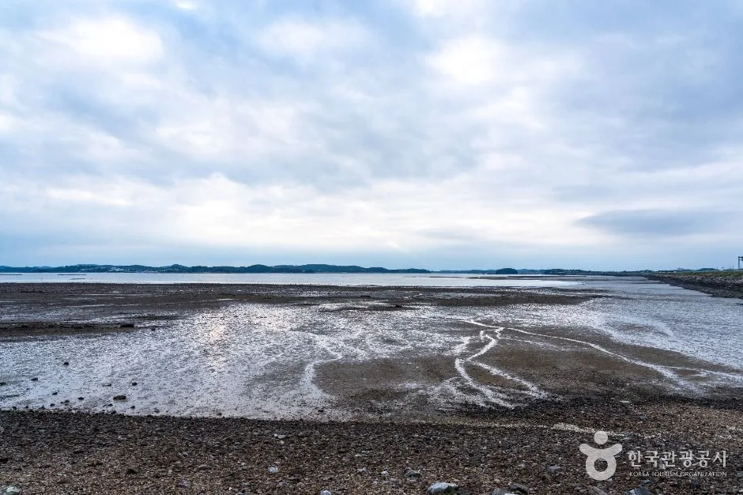
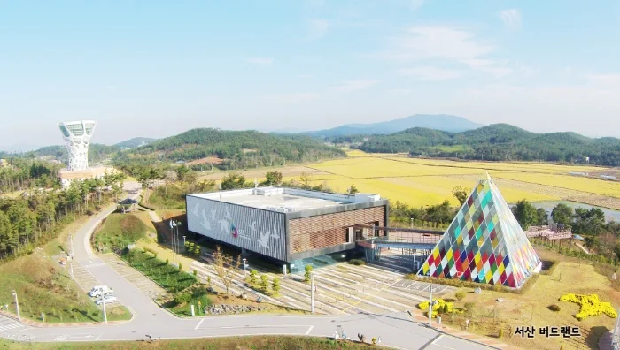
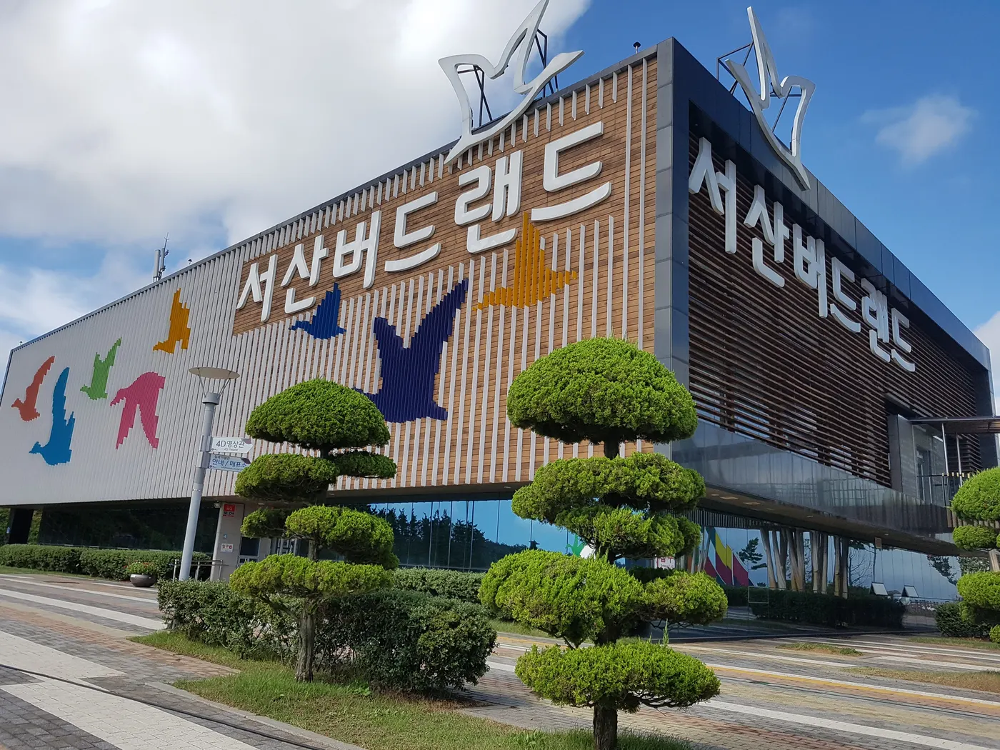
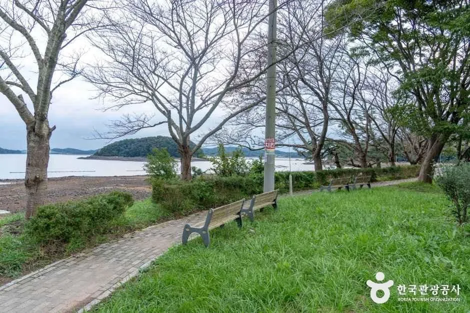
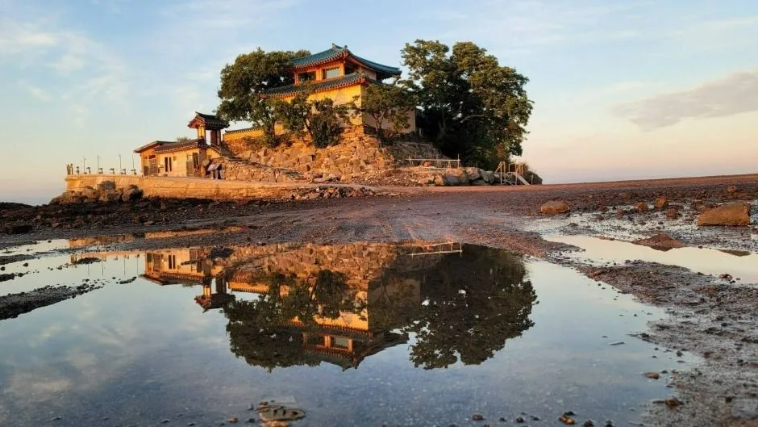
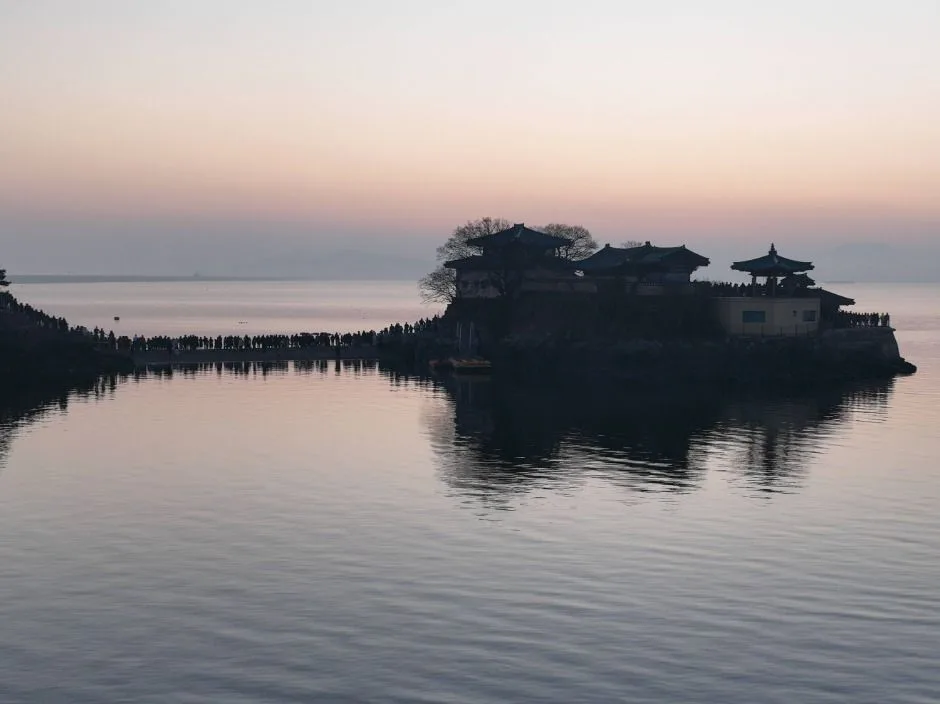

▲ 서산 상공을 나는 흑두루미(Grus monacha) 무리. 2019년 3월 24일 촬영으로 북상하는 봄철 사진이라 가을 사진이 아니다. 좌우로 건물과 전선이 보이고 위치도 천수만이 아니라 서산 시내 쪽 상공(촬영 좌표 기준 북위 36.67도)이라 천수만 풍경이 아니다. 사진=Kim, Hyun-tae(iNaturalist), 위키미디어 커먼즈 CC BY 4.0
"천수만 철새, 올해는 언제부터 볼 수 있을까?" 2026년 10월 14일 기준으로 서산시나 서산버드랜드가 올가을 도래 개체수를 공식 발표한 자료는 찾지 못했다. 그래서 도래 시기는 평년(과거 공식 안내) 기준으로만 적는다. 서산버드랜드 누리집은 이날 오후 2시 18분 "제무리를 잃어버리고 천수만을 찾아 온 흰기러기"를 올렸고, 10월 24일(토)·25일(일) '2026 서산버드랜드 철새기행전'을 공지했다. 시설 운영은 10월 휴관일 6·12·19·26일(월요일 휴관 원칙)이라는 공지와 10월 프로그램 예약 달력으로 확인된다. 가창오리 군무는 서산버드랜드 안내에 따라 해 질 무렵을 중심으로 보면 되고, 일몰 시각표는 아래에 계산해 실었다.
💡 먼저 결론
천수만 겨울철새 시즌은 10월부터 이듬해 3월까지, 가창오리 군무는 일몰 전후가 핵심이다. 서산버드랜드(041-661-8054)는 11월부터 폐관이 17시로 당겨지는데 일몰은 11월 1일 17시 39분(자체 계산)이므로, 군무 감상은 시설 안보다 시설 밖 탐조 포인트(A지구 방조제·간월도 입구)에서 하게 된다. 올해 도래 개체수, 방조제 위 정차·통행 규정, 올가을 AI 방역 관련 출입통제 공고는 확인하지 못했다. 서산버드랜드 철새탐조 안내 바로가기
1. 한눈에 보기 — 확인한 것과 확인하지 못한 것
천수만은 충남 서산·태안·홍성에 걸친 만으로, 1980년대 간척과 방조제 공사로 인공 담수호인 간월호·부남호와 약 6,400ha 농경지가 생기면서 철새도래지가 됐다. 서산버드랜드 누리집은 방조제가 태안군 남면 당암리에서 서산시 부석면 창리를 지나 홍성군 서부면 궁리를 잇는 길이 7,740m이며, 1987년 완공 때 간석지 15,409ha를 매립했다고 설명한다. 간월호는 2,164ha, 부남호는 1,021ha(합계 3,185ha)다. 2026년 10월 14일에 서산버드랜드 누리집과 한국관광공사 TourAPI를 직접 열어 확인한 값은 다음과 같다.
| 항목 | 확인된 값 | 출처·상태 |
|---|---|---|
| 겨울철새 체류 기간 | 월동기 10월~이듬해 3월(천수만 소개), 가창오리는 10월~이듬해 3월(대표철새) | 서산버드랜드 누리집(평년 기준 안내) |
| 올가을(2026) 도래 개체수 | 공식 집계 발표를 찾지 못함. 10월 14일 흰기러기 1마리 소식만 게시 | 확인하지 못했다 |
| 서산버드랜드 운영 | 하절기(3~10월) 10:00~18:00, 동절기(11~2월) 10:00~17:00, 월요일 휴관 | 누리집 이용안내·TourAPI 일치 |
| 10월 휴관일 | 6·12·19·26일(2026-09-02 공지) | 누리집 버드랜드소식 |
| 2026 철새기행전 | 10월 24일(토)·25일(일), 서산버드랜드 및 천수만 일원 | 누리집 공지(2026-10-11) |
| 입장료 | 어른 3,000원, 청소년·군인 2,000원, 만 12세 이하·만 65세 이상 무료 | 누리집 이용안내 |
| 천수만 철새도래지 개방 | 상시 개방(TourAPI 이용시간) | TourAPI(수정 2025-11-18) |
| 탐조버스·안내자 | 11~12월 운행 안내문은 있으나 올해 운행·예약 일정은 확인하지 못함 | 누리집 철새탐조 안내(작성 시점 불명) |
| AI 등 출입통제 | 올해 천수만 탐방 제한 공고를 찾지 못함 | 확인하지 못했다. 출발 전 전화 확인 |
| 방조제 위 정차·통행 | 공식 안내를 찾지 못함 | 확인하지 못했다 |
| 일몰 시각 | 한국천문연구원 공식 값을 조회하지 못해 카프리즘이 계산(오차 ±2분 정도) | 아래 3장 참고 |
서산버드랜드 누리집 공지 목록에는 휴관·출입통제를 알리는 올해 공고가 보이지 않았다. 다만 공고가 없다는 사실이 통제가 없다는 뜻은 아니다. 철새도래지는 방역 상황에 따라 바뀔 수 있으니 출발 전 서산버드랜드에 한 번 전화하는 편이 안전하다.
▲ 서산 상공을 나는 흑두루미(Grus monacha) 무리. 2019년 3월 24일 촬영으로 북상하는 봄철 사진이라 가을 사진이 아니다. 좌우로 건물과 전선이 보이고 위치도 천수만이 아니라 서산 시내 쪽 상공(촬영 좌표 기준 북위 36.67도)이라 천수만 풍경이 아니다. 사진=Kim, Hyun-tae(iNaturalist), 위키미디어 커먼즈 CC BY 4.0
2. 철새 도래 시기 — 평년 기준으로 읽는 법
서산버드랜드의 '천수만 소개'는 월동 기간을 10월부터 이듬해 3월까지로 잡고, 이 기간의 월평균 기온을 4.8℃(최고 10월 12.8℃, 최저 1월 -0.3℃)로 소개한다. 주남저수지나 낙동강보다 월평균 4℃가량 낮지만 같은 위도 내륙보다는 1~2℃ 높다는 설명이다. '대표철새' 페이지는 가창오리를 "우리나라에서는 10월부터 이듬해 3월까지 겨울을 보낸다"고, 큰기러기를 "9월 중순에 찾아와 이듬해 2월 말 또는 3월 초까지" 머문다고 적는다. 큰기러기는 쇠기러기와 섞여 천수만에서 겨울철 10만 개체 이상이 관찰된다는 설명이 붙어 있다.

▲ 천수만 철새 체류 기간(서산버드랜드 안내)과 공식 게시물·보도에서 확인한 관찰 시점을 카프리즘이 그래프로 제작. 사진=카프리즘 제작 도표
연도별 실제 흐름은 몇 가지 공식 기록으로만 가늠할 수 있다. 아래 표는 확인 가능한 해당 연도 기록이다. 조사 방식이 달라 연도끼리 단순 비교는 하지 않았다.
| 시점 | 확인된 내용 | 출처 |
|---|---|---|
| 2022년 10월(버드랜드 센서스) | 기러기류 관찰 개체수가 늘고 있으나 버드랜드 주변 논은 추수가 덜 된 상태. 천수만 센서스 1차에서 가창오리·홍머리오리 관찰 | 서산버드랜드 게시물(2022-11) |
| 2022년 11월(버드랜드 센서스) | 1차에 버드랜드 상공 흑두루미 2개체, 2차에 흑두루미 8개체와 독수리 9개체 관찰 | 서산버드랜드 게시물(2022-12-15) |
| 2024년 3월 | 간월호 인근에서 흑두루미 1만 4천여 마리 관찰 | 트윅24 2025-01-08(서산시 인용) |
| 2024년 10월 18일 | 겨울철새 약 12만 마리 도래 | 위키트리 2024-10-22(서산시 인용) |
| 2015~2024년 | 천수만에서 야생조류 303종 관찰, 2024년 223종(10년 중 최다)·약 23만 7천 마리 | 트윅24 2025-01-08(서산시 인용) |
| 2026년 10월 14일 | 길 잃은 흰기러기 1마리 사진 게시. 개체수 집계 아님 | 서산버드랜드 누리집 |
이 표에서 읽을 수 있는 평년의 윤곽은 이렇다. 10월 중순이면 이미 십수만 마리가 도래한 해가 있고(2024년), 10월에는 논 추수가 끝나기 전이라 기러기 무리가 한곳에 머물지 못한다(2022년). 흑두루미는 이 자료에서 11월과 3월 기록만 확인되고 공식 체류 기간은 찾지 못했다. 서산버드랜드 '대표철새'는 천수만에서 2~3월 북상 시기에 4,000개체 이상이 확인된다고 적고, 2022년 11월 천수만 센서스 2차에는 흑두루미 47개체·황새 12개체·기러기 최대 약 12,000개체가 기록돼 있다. 가창오리 개체수는 안내문과 보도가 어긋난다. 누리집 탐조 안내는 "30여 만 마리의 가창오리 떼"라고 쓰지만, 2025년 1월 보도는 서산시 설명으로 과거 30만 마리가 찾던 가창오리가 지난해 1만 마리 이상 관찰됐다고 전한다. 안내문은 작성 시점을 알 수 없어, 지금 가서 수십만 마리를 기대하기는 어렵다고 보는 편이 안전하다.
3. 가창오리 군무 — 시간대와 일몰 시각표
서산버드랜드는 가창오리가 낮에는 간월호 수면이나 모래톱에서 쉬다가 해 질 무렵 먹이를 먹기 위해 집단으로 날아오른다고 설명한다. 낮에 정찰병 새가 먹이 있는 곳을 물색해 두고 저녁에 우두머리의 신호로 날아오른다는 설명도 있다. '대표철새'는 "일몰 직후 밤에 먹이를 먹으려고 전체의 무리가 비상하는 것이 특징"이라고 적고, TourAPI 설명은 새들이 주로 새벽이나 저녁에 먹이를 찾아 이동하므로 이 시간에 관찰하라고 한다. 공식 자료에서 정확한 이륙 시각(일몰 몇 분 전후)은 찾지 못했다. 그래서 일몰 시각을 기준으로 앞뒤 시간을 확보하는 방식이 가장 확실하다.

▲ 간월도 일대(북위 36.62도, 동경 126.38도) 일몰 시각과 상용박명 종료 시각 계산값. 한국천문연구원 공식 값이 아닌 카프리즘 자체 계산. 사진=카프리즘 제작 도표
| 날짜 | 일출 | 일몰 | 상용박명 종료 | 서산버드랜드 폐관 |
|---|---|---|---|---|
| 2026-10-24(철새기행전 첫날) | 06:49 | 17:48 | 18:14 | 18:00 |
| 2026-11-01 | 06:57 | 17:39 | 18:06 | 17:00(동절기 시작) |
| 2026-11-15 | 07:12 | 17:27 | 17:54 | 17:00 |
| 2026-12-01 | 07:28 | 17:20 | 17:48 | 17:00 |
| 2026-12-15 | 07:39 | 17:20 | 17:49 | 17:00 |
| 2027-01-01 | 07:46 | 17:28 | 17:57 | 17:00 |
| 2027-01-15 | 07:46 | 17:40 | 18:09 | 17:00 |
| 2027-02-01 | 07:37 | 17:58 | 18:26 | 17:00 |
| 2027-02-15 | 07:24 | 18:14 | 18:40 | 17:00 |
| 2027-03-01 | 07:07 | 18:28 | 18:54 | 18:00(하절기 시작) |
이 표는 태양의 겉보기 위치를 계산식으로 구한 값이다. 한국천문연구원 천문우주지식정보에서 서산 값을 확인하면 1~2분 차이가 날 수 있다. 겨울 일몰은 17시 20분 전후로 가장 이르고, 이때는 군무를 보려면 오후 4시 반쯤에는 탐조 포인트에 도착해 있어야 한다. 서산버드랜드는 동절기에 17시 폐관이므로 11월 이후 군무는 사실상 시설 밖에서 보게 된다. 반대로 10월에는 18시 폐관이라 10월 24일 일몰(17:48) 직전까지 시설 이용이 가능하지만, 군무를 시설 안에서 볼 수 있다는 공식 안내는 찾지 못했다.

▲ 해질녘 오리 떼가 한꺼번에 날아오르는 장면을 설명하기 위한 AI 생성 이미지(예시). 실제 천수만 사진이 아니며 개체수·구도는 실제와 다르다. 사진=CarPrism (AI 생성 이미지)

▲ 가창오리(Baikal teal) 수컷 두 마리. 2008년 1월 3일 충남 예산군 대흥면에서 촬영한 사진으로 천수만이 아니다. 몸길이 약 40~44cm 오리류다(서산버드랜드). 사진=pintail(iNaturalist), 위키미디어 커먼즈 CC BY 4.0
4. 관찰 포인트 — A지구 방조제·간월도 입구·농로 코스
서산버드랜드의 '철새탐조' 안내는 탐조 포인트를 이렇게 정리한다. "천수만에서 철새 탐조를 하기 좋은 곳은 A지구 방조제와 방조제 끝 쪽의 간월도 입구"이며, 가창오리 무리는 A지구 방조제에서 보는 것이 좋고 철새기행전이 열리는 간월도 입구에는 무논탐조대가 설치돼 더 가깝게 볼 수 있다. 더 많은 새를 가까이서 보려면 간월호와 부남호 주변 농로를 따라 탐조하거나 철새기행전의 '철새 탐조 코스'를 이용하라고 한다.
| 포인트 | 볼 수 있다고 안내된 새 | 메모 |
|---|---|---|
| A지구 방조제 | 가창오리 떼 군무 | 일몰 무렵 관찰. 방조제 위 정차 규정은 확인하지 못함 |
| 간월도 입구 무논탐조대 | 가창오리 근접 관찰 | 철새기행전 행사장 일대. 상시 설치 여부·개방 시간은 확인하지 못함 |
| 간월도 입구에서 농로 약 5분 안쪽 하천(폭 20~30m) | 천연기념물 황새 | 탐조버스 코스 안내문 기준 |
| 간월호 중간둑~해미천 가는 길 다리 | 노랑부리저어새·왜가리·중대백로·쇠백로 | 같은 코스 안내 |
| 간월호 한가운데 모래톱·농로 주변 | 흰꼬리수리·기러기 떼 | 같은 코스 안내 |
| 간척 농지 | 수천 마리 기러기 먹이 활동 | 같은 코스 안내 |
| 그 밖 | 재두루미·흑부리오리·큰고니·흑두루미·황오리 | 곳곳에서 관찰 가능하다는 일반 안내 |
누리집은 또한 탐조버스를 설명한다. 철새기행전 쪽에서 마련한 코스로, 오전 10시부터 오후 4시까지 한 시간 간격으로 출발해 간월호 주변 30km를 약 1시간 30분 돈다. 탐조대에서 철새를 관찰하고 예약 후 전문 안내자 설명을 들을 수 있다. 같은 페이지는 '천수만 안내자 모임'(2001년 시작, 현재 20여 명)이 서산시 지원과 서산태안환경운동연합 교육으로 활동하고, 11월부터 12월까지 운행되는 탐조 버스 투어에서 안내한다고 쓴다. 이 안내문은 작성·수정 시점이 표시돼 있지 않아 올해 운행 일정과 예약 방법은 확인하지 못했다. 10월 24일·25일 철새기행전 공지에도 탐조버스는 프로그램에 올라 있지 않고, '서산 천수만 탐조대회'(사전신청)가 '천수만 일원'에서 열린다고만 적혀 있다.

▲ 천수만 철새도래지 항목(TourAPI)에 등록된 사진으로, 흐린 하늘 아래 물이 빠져 드러난 갯벌과 자갈 해안이 보인다. 촬영 시기는 확인하지 못했고 새는 보이지 않는다. 사진=한국관광공사
누리집은 '탐조 포인트'로 A·B·C 세 지역별 주요 관찰종도 따로 적는다. 다만 이 구분은 위에서 말한 'A지구 방조제'와 다른 구역 표기로 보이고 지도 없이 새 이름만 나열돼 위치를 확인하지 못했다. 참고용으로만 보자.
| 지역 | 주로 보인다고 적힌 새 |
|---|---|
| A지역 | 말똥가리·검독수리·새매·벌매·황조롱이·큰고니·노랑부리저어새·뜸부기·흰목물떼새 |
| B지역 | 큰고니·황조롱이 |
| C지역 | 뜸부기·장다리물떼새·황조롱이·흰꼬리수리·검독수리 |
이 표에는 뜸부기·벌매 등 여름철새가 섞여 있어 겨울철새 안내만을 위한 표는 아니다. 겨울에는 이 중 큰고니·맹금류 위주로 보인다고 이해하면 된다.
5. 서산버드랜드 — 시간·요금·시설·2026 철새기행전
서산버드랜드는 서산시 부석면 천수만로 655-73에 있다. TourAPI에는 2011년 11월 개관으로 올라 있다. 누리집의 시설 안내는 철새전시관, 4D영상관, 둥지전망대, 야외시설, 야생동물 재활·교육센터로 구성돼 있다. 입장은 관람 종료 1시간 전까지다.
| 항목 | 내용 |
|---|---|
| 운영시간 | 3~10월 10:00~18:00 / 11~2월 10:00~17:00(입장 마감은 종료 1시간 전) |
| 휴관일 | 매주 월요일. 10월은 6·12·19·26일(6일은 화요일이다. 10월 5일 월요일은 개천절 대체공휴일이어서 휴관일이 옮겨진 것으로 보이나 공지에 사유는 없다) |
| 입장료(개인) | 어른 3,000원 / 청소년(중·고)·군인(병장 이하) 2,000원 / 만 12세 이하 무료 / 만 65세 이상 무료 |
| 입장료(단체 20인 이상) | 어른 2,000원 / 청소년·군인 1,500원 |
| 서산시민(명예시민) | 어른 1,500원 / 청소년·군인 1,000원 |
| 4D영상관 | 어른 2,000원 / 청소년·군인 1,000원 / 어린이 무료. 상영작 '새들의 천국 천수만'(11분) 등. 동절기 마지막 상영 16:30 |
| 문의 | 041-661-8054 |
| 주차 | TourAPI '가능', 주차요금 '무료'. 주차 면수는 확인하지 못함 |

▲ 서산버드랜드 전경. 서산시 제공 사진(위키미디어 파일 정보 기준 2017년 5월 게시)으로 누런 논이 보인다. 촬영 월은 확인하지 못했다. 사진=서산시, 위키미디어 커먼즈 CC BY-SA 3.0
10월 24일·25일 철새기행전의 공식 프로그램은 다음과 같다. 행사 이름은 "가족과 함께하는 서산 천수만 철새 여행"이다.
| 구분 | 프로그램 | 비고 |
|---|---|---|
| 생태체험 | 조류관찰 체험, 우드카빙(독수리 만들기·유료 1,000원), 산새먹이 만들기(야생동물재활교육센터) | 행사장 |
| 공연 | 마술 공연, 서산시 음악협회 공연(10월 25일), 해외 전통공연 | 전시관 1층 로비·행사장 일원 |
| 생태경연 | 천수만 철새 그림그리기 대회(10월 24일), 천수만 탐조대회 | 탐조대회는 사전신청, 천수만 일원 |
| 공예체험 | 솟대 만들기, 철새 등 만들기(3,000원), 와펜 자수 지갑(2,000원), 모루인형·새알 빵도마·알둥지 에그트레이·철새친구 우드카(각 1,000원) 등 | 대부분 유료 |
| 마을 프로그램 | 창리 바다낚시체험(10,000원, 사전신청), 간월도·창리·마룡리 마을 프로그램(1,000원), 생태관광지역 마을 먹거리 식당 | 창리 해변·행사장 |
10월 프로그램 예약 달력에는 철새기행전 창리 바다낚시체험이 10월 24일 11시·14시에 올라 있고, 10월 셋째 주(17일·18일) '천수만 생태관광 바지락 캐기 체험' 신청도 보인다. 행사 시간표(공연 시각, 탐조대회 집합 시간)는 공지에서 찾지 못했다. 행사 기간에는 방문객이 몰릴 수 있으니 주차는 일찍 가는 쪽이 안전하다. 같은 서산의 큰 행사였던 서산 해미읍성축제 가이드는 10월 9일부터 11일까지 열려 이미 끝났다.

▲ 서산버드랜드 건물 외관. 철새 그림이 입혀진 벽면이 보인다. 2017년 8월 23일 촬영 사진으로 현재 외관과 다를 수 있다. 누리집 시설명은 '철새전시관'이다. 사진=Bb7455, 위키미디어 커먼즈 CC BY-SA 4.0
6. 방조제·주차·교통 — 공식 확인된 것만
서산버드랜드는 TourAPI에 주차 '가능', 주차요금 '무료'로 올라 있고(2026-10-14 재조회) 주차 면수는 공식 자료에서 찾지 못했다. 가창오리 군무를 보는 A지구 방조제 일대와 간월도 입구에 지정 주차장이 있는지, 방조제 갓길 정차가 허용되는지는 공식 안내를 찾지 못했다. TourAPI 설명이 오히려 "자동차에서 내리지 않고 관찰하는 것도 좋은 방법"이라고 권하므로, 차를 대는 위치는 현장 표지와 단속 안내를 우선하자. 방조제처럼 차가 쉬지 않고 다니는 도로에 서면 위험하다. 단속 기준은 단풍철 갓길 주정차 단속 기사를 참고하되, 방조제 도로에 그대로 적용되는지는 확인하지 못했다.
| 장소 | 주소 | 이용시간·휴무 | 주차·문의 | 비고 |
|---|---|---|---|---|
| 서산버드랜드 | 서산시 부석면 천수만로 655-73 | 3~10월 10~18시, 11~2월 10~17시, 월요일 휴관 | 주차 가능(요금 무료) / 041-661-8054 | TourAPI 수정 2026-08-27 |
| 천수만(철새도래지) | 서산시 부석면 간월도리 | 상시 개방 | 서산버드랜드 041-661-8054 | 주변에 창리포구·당암포구(TourAPI 설명) |
| 간월호 쉼터공원 | 서산시 부석면 창리 265-8 | 상시 개방, 연중무휴 | 주차 가능 / 041-660-2051 | 화장실·배드민턴장. TourAPI 수정 2026-10-07 |
| 간월암 | 서산시 부석면 간월도1길 119-29 | 홈페이지 물때 참조 | 주차 가능 / 041-668-6624 | 썰물 때 걸어 들어감. 상세는 아래 기사 |

▲ 간월호 쉼터공원 산책로. 한국관광공사 사진(TourAPI 제공). 왼쪽 나무는 잎이 거의 없고 오른쪽 나무는 푸르러 계절을 가늠하기 어려우며 촬영 시기는 확인하지 못했다. 가을 사진으로 읽으면 안 된다. 사진=한국관광공사
TourAPI 설명에 따르면 간월호 쉼터공원은 간월도 가는 길목에 있어 노을이 바다를 물들이는 모습을 볼 수 있는 휴식 공간이고, 서산버드랜드도 가까워 연계 관광이 쉽다. 공공교통(버스)으로 가는 방법은 이 글에서 공식 노선 자료를 찾지 못해 적지 않았다.
7. 탐조 에티켓 — 환경부 행동수칙과 현장 안내
서산버드랜드 누리집은 환경부가 1998년 10월 마련한 '조류관찰자의 행동수칙'을 그대로 싣고 있다. TourAPI 설명도 새는 시각·청각이 예민하니 가까이 접근하지 말고, 망원경 등 장비를 갖추고, 빨강·노랑·흰색 옷과 고성방가를 피하라고 한다.
| 항목 | 내용 |
|---|---|
| 거리 | 가급적 30m 이상 떨어져 짧은 시간 안에 망원경 등으로 관찰 |
| 옷차림 | 화려한 옷, 눈에 잘 띄는 색깔의 옷, 펄럭이는 옷은 입지 않기 |
| 행동 | 신체나 장비를 노출하거나 큰 소리를 내지 않기 |
| 먹이·쓰레기 | 함부로 먹이를 주거나 서식지 주변에 음식물 쓰레기를 버리지 않기 |
| 서식지 | 환경을 훼손하지 않고 둥지·알·새끼를 옮기거나 훼손하지 않기 |
| 번식기 | 번식 기간에는 조수보호구·희귀조류 번식지에 출입하지 않기 |
| 신고 | 희귀조류·둥지·서식지를 발견하면 관계기관에 신속히 통보 |
▲ 차 안에서 창을 열고 철새를 조용히 관찰하는 장면을 설명하기 위한 AI 생성 이미지(예시). 실제 천수만 사진이 아니다. 사진=CarPrism (AI 생성 이미지)
드론 비행 제한은 이 글에서 서산시 공식 안내를 찾지 못했다. 철새는 소음에 민감하다는 위 수칙의 취지상 드론은 가져가지 않는 것이 안전하다. 군무 시간대에는 다른 탐조객과 사진가도 모이므로, 무리가 날아오를 때 차 문 소리·플래시·큰 목소리를 줄이는 것이 기본이다.
8. 하루 코스 — 간월암과 먹거리까지
철새 감상은 해 질 무렵이므로 낮 시간을 서산의 다른 볼거리로 채우는 구성이 자연스럽다. 간월도는 서산 9경 중 3경으로 바다 위 간월암과 어리굴젓 기념탑이 있다(서산시 관광안내). 간월암은 물때에 따라 길이 열리고 닫혀 시간 계산이 필요한데, 물때 확인법과 해미읍성 연계 코스는 서산 간월암·해미읍성 물때 가이드에 정리돼 있다.
| 시간대 | 할 일 | 근거 |
|---|---|---|
| 오전~낮 | 서산버드랜드 관람(10~18시 또는 10~17시, 월요일 제외), 4D영상 '새들의 천국 천수만' 시청 | 누리집 이용안내 |
| 오후 | 간월호 쉼터공원 산책, 간월암(물때 확인) | TourAPI |
| 일몰 약 1시간 전 | A지구 방조제 일대 또는 간월도 입구 도착, 차 안에서 관찰 준비 | 누리집 탐조 안내·일몰표 |
| 일몰 전후 | 가창오리 군무 관찰. 폐관 후이므로 시설 이용 불가 | 누리집·자체 계산 일몰 |
| 일몰 후 | 간월도·창리 일대 식당에서 식사 | 누리집 여행가이드 |

▲ 썰물 때 드러난 갯벌에 비친 간월암(서산). 한국관광공사 사진으로 촬영 시기는 확인하지 못했고, 변경 없이 형식만 변환했다. 사진=한국관광공사
서산버드랜드 누리집 '여행가이드'에는 간월도·창리 일대 식당이 올라 있다. 서산시 관광 안내는 간월도 어리굴젓이 무학대사가 간월암에서 수도할 때 태조에게 처음 진상한 데서 유래했다고 소개한다. 식당 영업시간은 확인하지 못했으니 전화로 확인하자.
| 가게 | 누리집이 적은 메뉴 |
|---|---|
| 창리꽃게장굴밥집 | 간장게장, 영양굴밥, 간재미무침, 게국지, 해물칼국수 |
| 울엄마영양굴밥 | 영양굴밥, 굴국밥, 바지락칼국수, 굴파전, 간재미무침 |
| 간월도 바다횟집 | 각종 활어회, 대하, 꽃게, 전어회(구이), 생선매운탕, 바다낚시 안내 |
| 전망좋은횟집 | 활어회, 계절메뉴(새조개·대하·전어·꽃게), 영양굴밥, 해물탕, 젓갈 |
| 해순네 | 간재미무침, 바지락칼국수, 대하, 꽃게, 낙지, 전어, 젓갈 |

▲ 바다 위에 실루엣으로 보이는 간월암. 새벽 또는 해 질 녘으로 보이나 촬영 시각은 확인하지 못했다. 한국관광공사 사진이며 변경 없이 형식만 변환했다. 사진=한국관광공사
천수만 건너편 홍성 남당항 쪽으로 이어 가는 코스는 홍성 남당 대하축제 가이드와 서해안 가을 수산물 축제 달력에서 날짜를 확인하고 계획하면 된다.
9. 주남저수지와 무엇이 다른가
같은 철새 탐방이지만 천수만은 간척으로 생긴 담수호와 넓은 농경지에 오리·기러기류가 몰리는 구조이고, 창원 주남저수지는 호수와 습지, 전용 탐방로·무료 문화관 중심이다. 서산버드랜드 누리집은 가창오리의 90%가 천수만을 찾아온다고, TourAPI 설명은 전 세계 개체수의 90% 이상이 모인다고 적는다. 반면 주남은 재두루미 월동지로 소개된다. 주남저수지 쪽 정보는 창원 주남저수지 철새 가이드에서 확인할 수 있다.
| 항목 | 서산 천수만 | 창원 주남저수지 |
|---|---|---|
| 성격 | 간척 담수호(간월호·부남호)와 농경지 | 배후습지성 저수지 3곳 |
| 대표 철새 | 가창오리, 기러기류, 흑두루미 등(서산버드랜드) | 재두루미, 기러기류 등(창원시) |
| 군무 관찰 시간 | 해 질 무렵 중심(서산버드랜드) | 주남 기사에서는 시간대 공식 근거를 찾지 못함 |
| 유료 시설 | 서산버드랜드 어른 3,000원(월요일 휴관) | 람사르문화관·생태학습관 무료 |
| 올해 행사 | 철새기행전 10월 24일·25일(확인) | 올해 철새 행사 공식 공지 확인하지 못함(주남 기사 기준) |
서천 금강하구도 철새 명소로 알려져 있으나 이 글에서는 서천 쪽 올해 정보를 확인하지 못해 비교하지 않았다. 서천 신성리 갈대밭은 신성리 갈대밭 가이드를 참고하자.
10. 출발 전 체크리스트와 문의처
- 운영 확인: 서산버드랜드 041-661-8054. 10월 휴관일은 6·12·19·26일(남은 휴관일은 19일·26일). 철새기행전 기간(24일·25일)은 휴관 공지가 없지만 확정은 아니다.
- 시간: 가창오리 군무는 일몰 전후. 일몰은 10월 24일 17:48, 11월 1일 17:39, 12월 중순 17:20 전후(자체 계산). 한국천문연구원에서 직접 확인하자.
- 장비·복장: 쌍안경·망원경, 눈에 띄지 않는 색 옷, 방한복. 30m 이상 거리 유지.
- 차량: 방조제 위에서는 도로 위험과 정차 규정이 불명확하므로 지정 주차 공간 이용을 우선.
- 철새기행전: 탐조대회·창리 바다낚시는 사전신청. 신청 방법·마감은 누리집에서 확인.
- 드론·먹이: 드론은 가져가지 않고 먹이는 주지 않는다.
- AI 방역: 올해 출입통제 공고는 찾지 못했으니 출발 전 전화 확인.
✅ 핵심 체크
· 천수만 월동기 10월~이듬해 3월, 가창오리도 10월~이듬해 3월(서산버드랜드 안내)
· 철새기행전 10월 24일(토)·25일(일), 버드랜드 10월 휴관 6·12·19·26일
· 버드랜드 하절기 10~18시, 동절기(11~2월) 10~17시, 어른 3,000원
· 올해 도래 개체수·방조제 정차 규정·AI 통제 공고: 확인하지 못함
11. 정리
천수만 겨울철새는 서산버드랜드 안내로 10월부터 이듬해 3월까지이고, 가창오리 군무는 해 질 무렵 A지구 방조제와 간월도 입구에서 보는 것이 공식 안내다. 올가을 도래 개체수는 공식 발표를 찾지 못해 평년 기준으로만 적었고, 10월 24일·25일 철새기행전은 누리집 공지로 확인했다.
서산버드랜드는 11월부터 17시 폐관이라 군무는 시설 밖에서 보게 된다. 방조제 위 정차 규정, 탐조버스 올해 운행, 출입통제 공고는 확인하지 못했으므로 방문 전 전화로 확인하자.